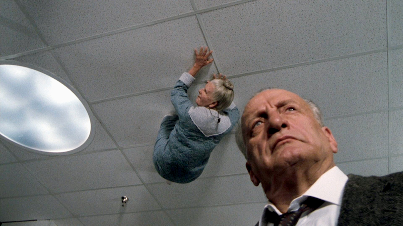
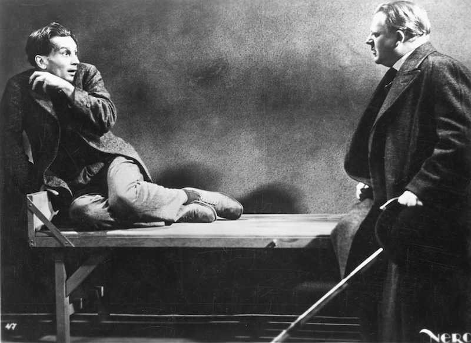
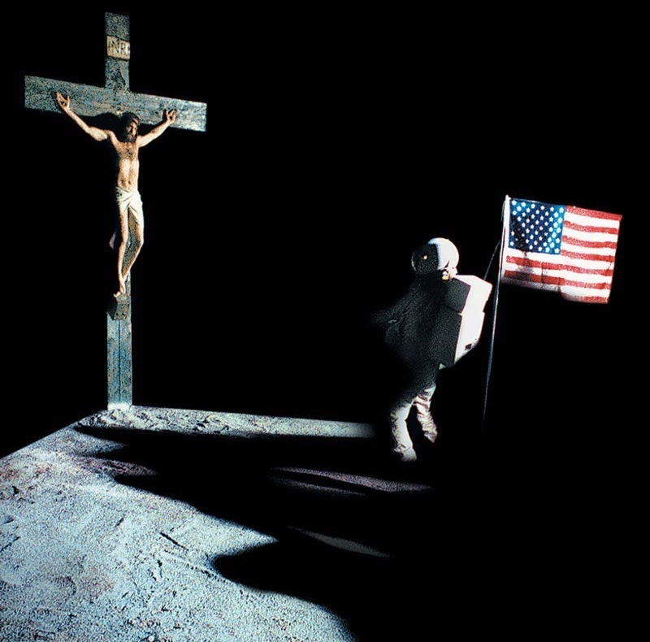
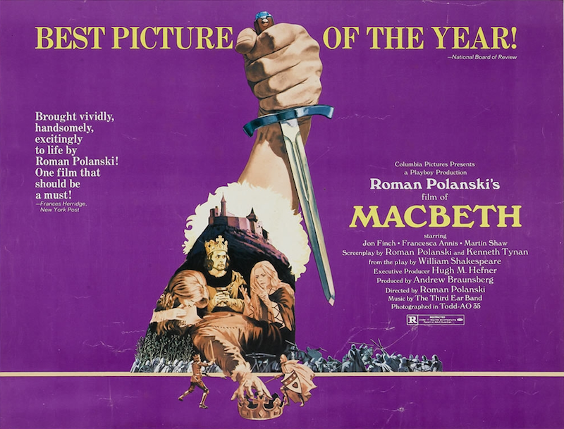
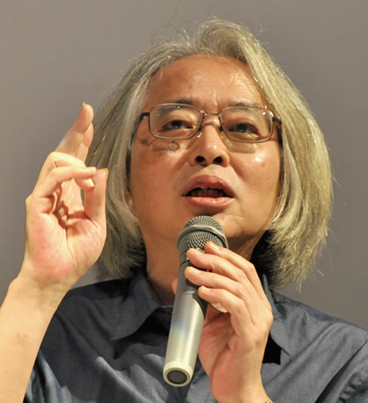
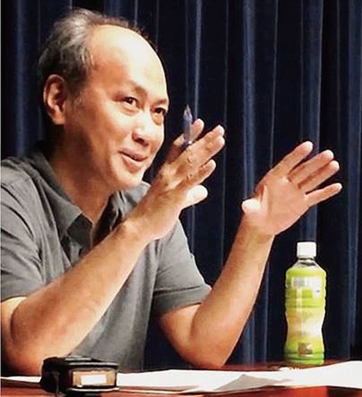
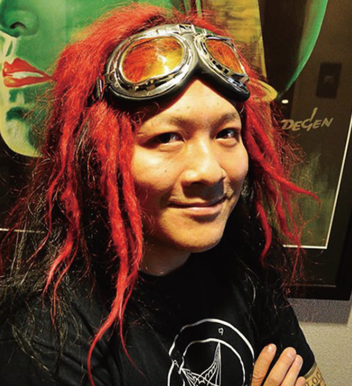

不安な時代、呪われた映画
意志の勝利Triumph des Willens

1935年/ドイツ/111min
監督：レニ･リーフェンシュタール
出演：アドルフ･ヒトラー、ルドルフ･ヘス、ヨゼフ･ゲッペルス、ハインリヒ･ヒムラ－
ヨーロッパを破滅の危機に追い込んだナチス政権によるドイツ第三帝国のプロパガンダ映画。その悪魔的な魅力は当時の民衆を熱狂させ、ナチスの勢いを加速させた。
エクソシスト3THE EXORCIST Ⅲ

1990年/アメリカ/110min
監督･脚本･原作：ウィリアム･ピーター･ブラッティ
出演：ジョージ･Ｃ･スコット、ブラッド･ドゥーリフ、エド･フランダース、ジェイソン･ミラー
あの『エクソシスト』から一七年後を原作者自らが映画化。告解室で首を切断される神父、精神病院に幽閉されている死んだはずの男、天井に貼りつく痴呆老人など強烈なイメージと音響の爆音上映でお送りする。
マブゼ博士の遺言Das Testament des Dr. Mabuse

1933年/ドイツ/122min
監督：フリッツ･ラング
出演：ルドルフ･クライン=ロッゲ、オットー･ヴェルニック
精神病院に幽閉されながらも社会秩序の破壊を企むマブゼ博士。彼の思想は場所や時間を超えて広がっていく。来るドイツの破滅を予言したような本作は、製作から80年以上経った現在でも全く古びていない。
トゥインクル･トゥインクル･キラーケーンThe Ninth Configuration

1980年/アメリカ/118min
監督･脚本：ウィリアム･ピーター･ブラッティ
出演：ステイシー･キーチ、スコット･ウィルソン、ジェイソン･ミラー、ジョー･スピネル
軍の精神病院に新しく院長として赴任してきたケーン大佐には秘密があった。暴力と不条理が溢れる世界を優しく描いた本作は、名状しがたい不思議な感覚を鑑賞後に残す、一度観たら忘れられない作品。
マクベスThe Tragedy of Macbeth

1971年/アメリカ、イギリス/140min
監督･脚本：ロマン･ポランスキー
出演：ジョン･フィンチ、フランチェスカ･アニス、マーティン･ショウ、ジョン･ストライド
シェークスピアの原作を暴力的リアリズムで陰惨に映画化。妻子をカルト集団に殺害されたポランスキー監督の心象風景（神のいない世界）がこの作品には現れている。
ソドムの市Salò o le 120 giornate di Sodoma

1975年/イタリア/116min
監督･脚本：ピエル･パオロ･パゾリーニ
原作：マルキ･ド･サド
音楽：エンニオ･モリコーネ
出演：パオロ･ボナチェッリ、ジョルジオ･カタルディ
ナチ占領下イタリア、ファシストの館で繰り広げられる変態行為の狂宴を執拗に描く。監督のパゾリーニは出演者の少年に惨殺され、本作が遺作となった。
【トークイベント】映画の生体解剖×サタニスト



稲生平太郎（横山茂雄）
1954年大阪生まれ。作家。著書に幻想小説「アクアリウムの夜」および「アムネジア」、UFO・オカルト論「定本何かが空を飛んでいる」、高橋洋との対談集「映画の生体解剖」など。横山名義の著書としては「聖別された肉体」「異形のテクスト」「神の聖なる天使たち」など。
高橋洋
1959年千葉生まれ。脚本作に『女優霊』『リング』『インフェルノ蹂躙』『復讐 運命の訪問者』『蛇の道』『発狂する唇』『血を吸う宇宙』『おろち』など。監督作に『ソドムの市』『狂気の海』『恐怖』『旧支配者のキャロル』。著書に「映画の魔」、稲生平太郎との共著「映画の生体解剖」がある。
高橋ヨシキ
1969年東京生まれ。デザイナー、ライター、サタニスト。雑誌『映画秘宝』アートディレクターを務める傍らライターとしても執筆。多くのDVDジャケット・映画ポスターのデザインを手がける。著書に映画評集「暗黒映画入門/悪魔が憐れむ歌」「暗黒映画評論/続・悪魔が憐れむ歌」、実話怪談「異界ドキュメント」シリーズなど。